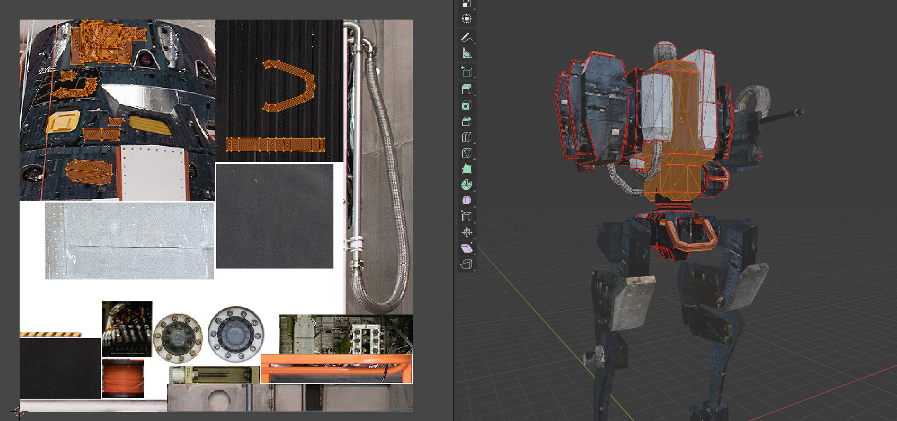

Concept
Long ago I was gifted a hand-me-down PC that my father built for himself in the late 90's. It was the first computer that was fully my own. I was obsessed with anything to do with giant robots at the time and one of the first 3D games I got for my new computer was Mechwarrior 2 Mercenaries. Mech sims were very much in vogue at the time and I was there for it. Fast forward to the early 2000's and Mechwarrior 4 was finally released. It was so well polished and smooth, the mechanics of that game stuck with me for years. So when I first discovered Three.js I had an itch to try and create a third-person mech controller using the library.
The manual for Three.js held my hand to get a project setup and I really wanted to be able to host the project publically with github pages. My first attempt resulted in a simple character controller that would move a cube around on a flat plane. This was fine, but I quickly realized that some sort of physics was going to need to be present to push the project further. Upon some research I found a project that was essentially a javascript wrapper for the bullet engine. Even more so I came across Simon Dev, a youtuber that focus's on 3D applications made with javascript and who's work would become a great resource for the project.
After getting a demo scene up and running it seemed appropriate to update my cube with something more interesting to look at. So I fired up Blender and whipped up a little robot.
After figuring out how to import the skeleton and get the Blender stuff converted to Three.js stuff, I had a nicely rigged and walking robot. My usual workflow for low poly assets is to model it and then find free-use images with interesting details to use for textures. For this model I went to nasa's image library, a horible and clunky website, found a few images and collaged them together. Here you can see how the highlighted portion of the mesh is unwrapped and laid over the texture to achieve that low-res aesthetic. I like to use the same image to texture a model so the lighting is consistent, but sometimes other images are needed for more defined details.

At this time I also created another simplified mesh to use as the collider for the model and made a simple level to test with. Using the Bullet physics engine is pretty intemidating to be honest. If it weren't for Simon's tutorial on integrating it I would have been scratching my head for awhile on that one. You essentially have to create 2 seperate "instances" of the game and sync them together. One "graphics world" visible to the player, and another "physics world" where all collisions are calculated based on kinetic controllers and collision meshes. The lower fideltiy collision meshes make it cheaper to calculate collisions, but can cause some weird graphical issues if gone too far. Other issues I ran into with the physics, if I made a valley too steep for the collider, it would just fall through. Not a big deal, just something to keep in mind when creating levels.
Implementation
Rotation
It was import to me that movement feel natural and fluid to the user. I wanted it to feel like the mech had weight and momentum as it moved. So when the torso rotated it needed to feel heavy and react to the users mouse input accordingly. So I bound the rotation to the horizontal movement of the mouse and applied a linear interpolation. For vertical rotation I did a similar thing but instead of rotating the torso, I rotated the gun turret instead. Some games will rotated the torso in both axis, but in my mind treating it like a tank turret where the gun and turret rotate in independent axis makes a lot more since. So when the player is sitting stationairy, the turret rotates with the camera, but when the player starts moving, the legs will snap in allignment with the direction of movement.
The only real trick was properly getting the gun turret to inherit the parent torso's position and rotation. Since objects in Three.js have both local and world coordinates, it just required finding which quaternions were needed and it all worked out.

Movement
To handle movement the users input was captured for axis of movement and the direction the camera was facing was applied to create a new vector for the direction of movemvent in either direction. This vector could then be passed to the physics controller and the character controller. It was important to me that the legs move independently of the torso. So I just rotated the legs in the direction of the movement vector to achieve that effect. But this did produce a new problem, the legs and torso were one single animated mesh. So I had to go back to my blender file and seperate them into 2 seperate meshes so I could apply rotations on them seperately.

At this time I also created a simple UI crosshair that helped sell the feeling of weight a lot better. It consits of 2 parts, a dot that is always fixed to the center of the screen and a circle that follows the rotation of the camera. Which is fine, but the torso only rotates on the horizontal axis, the gun turret rotates on both horizontal and vertical. But the gun turret is offset from the center so the follow-crosshair would always be a little off center. My solution was to create a point far off in space that was attached to the gun turret so the offset would become unnoticable. A little hack-y, but it works.
Conclusion
Overall I am very happy with how it turned out. The movement feels very fluid and natural with just the right amount of lead. Three.js supports raycasting, so I'd like to implement shooting and hit detection at some point. I even made a little drone that follows the player around.
I found that breaking projects up into little pieces helps me maintain a realistic scope and thus I actually finish things. So, for now this is finished. If you want to play around with it all the code is on my github. I'd like to have it running on github pages, but I haven't figured out how to setup node.js with it yet.
Thanks for reading! If you have any questions or feedback feel free to contact me!